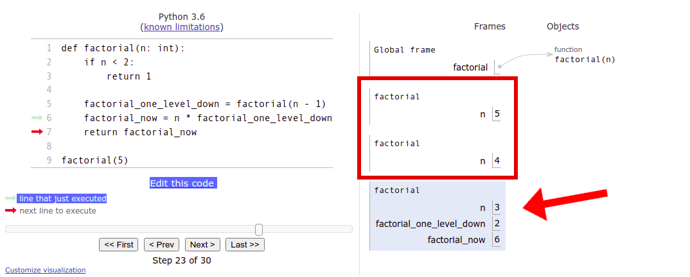
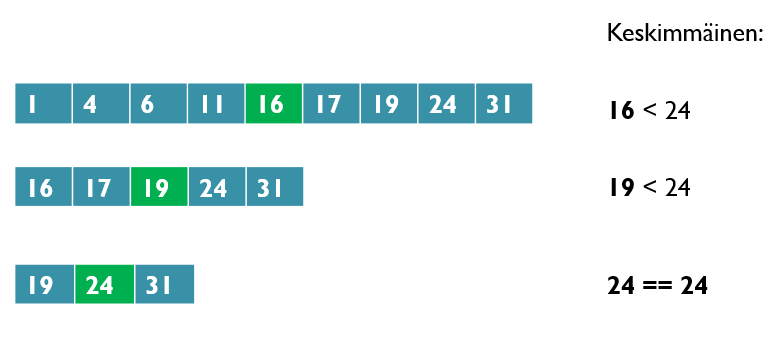

As we have seen many times before, functions can call other functions. For example:
def hello(name : str):
print("Hello", name)
def hello_many_times(name : str, times : int):
for i in range(times):
hello(name)
A function can also call itself, but we as programmers have to be careful when we do that. It is easy to fall into an endless loop of function calls, just like we fell into an infinite loop of repetitions with while loops if we left out the appropriate break conditions. So, trying to call a hello function with the following definition
def hello(name : str):
print("Hello", name)
hello(name) # function calls itself
would cause a new kind of error:
The recursion mentioned in the error above refers to defining something in terms of itself. In a programming context it usually refers to a function which calls itself. For this to work without causing any infinite loops, the arguments passed to the function must change each time, so that the nested function calls will stop at some point. The basic principle here is the same as in while loops: there must always be a stop condition of some kind, and that condition must be triggered at some point in the execution.
Let’s have a look at a simple function which adds zeroes to a list as long as there are less than 10 items in the list. This time we are not using a loop, however. If the condition is not yet met, the function calls itself:
def fill_list(numbers: list):
""" If the length of the list is less than 10, add items to the list """
if len(numbers) < 10:
numbers.append(0)
# call the function again
fill_list(numbers)
if __name__ == "__main__":
test_list = [1,2,3,4]
fill_list(test_list)
print(test_list)
This functionality could just as well be achieved with a regular while loop:
def fill_list(numbers: list):
""" If the length of the list is less than 10, add items to the list """
while len(numbers) < 10:
numbers.append(0)
if __name__ == "__main__":
test_list = [1,2,3,4]
fill_list(test_list)
print(test_list)
The more traditional iterative approach produces a shorter program which is arguably also easier to understand. With the recursive version it is not as clear that throughout the process we are working on the very same list. That is, however, the case, and that is why the recursive function works just as well.
Recursive functions can also have return values. In the last few sections we’ve worked with factorials, so let’s write a recursive factorial function:
def factorial(n: int):
""" The function calculates the factorial n! for n >= 0 """
if n < 2:
# The factorial for 0 and 1 is 1
return 1
# Call the function again with an argument that is one smaller
return n * factorial(n - 1)
if __name__ == "__main__":
# Tesing our function
for i in range(1, 7):
print(f"The factorial of {i} is {factorial(i)}")
If the parameter of the recursive factorial function is 0 or 1, the function returns 1, because this is how the factorial operation is defined. In any other case the function returns the value n * factorial(n - 1), which is the value of its parameter n multiplied by the return value of the function call factorial(n - 1).
The crucial part here is that the function definition contains a stop condition. If this is met, the recursion ends. In this case that condition is n < 2. We know it will be reached eventually, beacuse the value passed as the argument to the function is decreased by one on each level of the recursion.
The visualisation tool can be a great help in making sense of recursive programs.
It might make the above example a little clearer if we used helper variables:
def factorial(n: int):
if n < 2:
return 1
factorial_one_level_down = factorial(n - 1)
factorial_now = n * factorial_one_level_down
return factorial_now
factorial(5)
Take a look at how the visualisation tool demonstrates the progress of the recursion.
The visualisation tool has a small quirk in the way it handles the call stack, as it seems to “grow” downwards. Usually call stacks are depicted as just that: stacks, where the new calls are placed on top. In the visualisation tool, the currently active function call is the shaded block at the bottom, which has its own copies of the variables visible.
When the recursive factorial function is called, the call stack is built until the limit posed by n < 2 is reached. Then the final function call in the stack returns with a value - it is 1, as n is now less than 2. This return value is passed to the previous function call in the stack, where it is used to calculate that function call’s return value, and so forth back out of the stack.
The return value of each function call is stored in the helper variable factorial_now. Please go through the visualisation carefully until you understand what happens at each step, and pay special attention to the value returned at each step.

Let’s have a look at another common recursive example: the Fibonacci number. In a Fibonacci sequence each number is the sum of the two preceding numbers. The first two numbers are here defined as 1 and 1, and the sequence then begins like this: 1, 1, 2, 3, 5, 8, 13, 21, 34.
def fibonacci(n: int):
""" The function returns the nth number in the Fibonacci sequence (1, 1, 2, 3, 5, 8 etc.); n > 0"""
if n <= 2:
# the first two are ones
return 1
# All other numbers equal the sum of the two preceding numbers in the sequence
return fibonacci(n - 1) + fibonacci(n - 2)
# Test that everything works
if __name__ == "__main__":
for i in range(1, 11):
print(f"The {i}. number in the Fibonacci sequence is {fibonacci(i)}")
This time the stop condition is that the parameter is less than or equal to 2, because the entire sequence is defined from the first two numbers onwards, and we defined the first two numbers to be equal to 1.
So, how does this function work in practice?
If the function is called with 1 or 2 as its argument, it returns 1, as dictated by the condition n <= 2.
If the argument is 3 or greater, the function returns the value of fibonacci(n - 1) + fibonacci(n - 2). If the argument is 3 exactly, this value is equal to fibonacci(2) + fibonacci(1), and we already know the result of both of those from the previous step. 1 + 1 equals 2, which is indeed the third number in the Fibonacci sequence.
If the argument is 4, the return value is fibonacci(3) + fibonacci(2), which we now know to be 2 + 1, which equals 3.
If the argument is 5, the return value is fibonacci(4) + fibonacci(3), which we now know to be 3 + 2, which equals 5.
And so forth, and so forth.
We can verify at every step that the function produces the correct results, which is often enough in basic programming tasks. The formal verifiability of algorithms is a topic for more advanced courses, such as Data Structures and Algorithms.
In a binary search we have a sorted list of items and we are trying to find a certain item within. The order of the items could be, for example, numbers from smallest to greatest, or strings from alphabetically first to last. The method of sorting doesn’t matter, as long as it is known and relevant to the item we are trying to find.
The idea of a binary search is to always look at the item at the very centre of the list. We then have three possible scenarios. If the item at the centre is
If the list is empty, we can determine that the item was not found, and return an indication of that.
In the following image we can see how a binary search progresses as it looks for the number 24:

Here is a recursive algorithm for a binary search:
def binary_search(target: list, item: int, left : int, right : int):
""" The function returns True if the item is contained in the target list, False otherwise """
# If the search area is empty, item was not found
if left > right:
return False
# Calculate the centre of the search area, integer result
centre = (left+right)//2
# If the item is found at the centre, return
if target[centre] == item:
return True
# If the item is greater, search the greater half
if target[centre] < item:
return binary_search(target, item, centre+1, right)
# Else the item is smaller, search the smaller half
else:
return binary_search(target, item, left, centre-1)
if __name__ == "__main__":
# Test your function
target = [1, 2, 4, 5, 7, 8, 11, 13, 14, 18]
print(binary_search(target, 2, 0, len(target)-1))
print(binary_search(target, 13, 0, len(target)-1))
print(binary_search(target, 6, 0, len(target)-1))
print(binary_search(target, 15, 0, len(target)-1))
The binary_search function takes four arguments: the target list, the item being searched for, and the left and right edges of the search area. When the function is first called, the search area covers the entire target list. The left edge is at index 0 and the right edge is at index len(target)-1. The function calculates the central index and checks that position on the list. Either the item was found, or the search continues to the smaller or greater half of the target list.
Let’s compare this to a simple linear search. In a linear search, the search area is traversed from the beginning onwards, until either the item is found, or we run out of search area. The number of steps needed to cover the entire search area grows linearly at the same pace as the size of the search area. Each search step covers only one search candidate from the beginning of the search area. Let’s assume the item searched for is not found. If the search area is a million items long, we would have to take a million search steps to make sure the item is not in the search area.
In a binary search, on the other hand, the number of steps needed grows logarithmically. Let’s assume again that the item searched for is not found. The search area is cut in half with each step, as we know that the item is either smaller or greater than the current search candidate at the centre. 2 to the power of 20 (2^20) is already well over 1 million, so it will take at most 20 steps to cover the entire search area with a binary search. So, when we are dealing with sorted search areas, as we often are when dealing with computers and materials that are meant to be automatically processed, a binary search is much more efficient than a linear search.